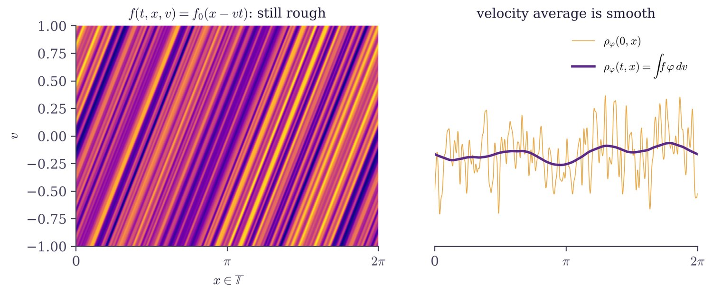

Averaging lemmas for kinetic transport
A density \(f(t,x,v)\) of particles at position \(x\) with velocity \(v\) can be as rough as its data. Its velocity averages are better behaved: they gain fractional derivatives in \(x\). These averaging lemmas are a key source of compactness in kinetic theory and of regularity for conservation laws.
Given \(f\in L^\infty_tL^{p_1}_xL^{p_2}_v\), \(g\in L^1_tL^{q_1}_xL^{q_2}_v\) and a non-degenerate \(a\in \mathrm{Lip}\), the average lies in \(H^s\) for every \(s\) below an explicit exponent \(S(p_i,q_i,\kappa,\gamma)\).
We introduced a commutator method: pick a multiplier \(Q\) so that its commutator \([B,Q]\) with the transport operator \(B=a(v)\cdot\nabla_x\) is positive and gains a derivative, the mechanism behind local smoothing for dispersive equations. The proof needs only elementary Fourier analysis, covers a new range of integrability assumptions, and gives a direct regularity result for measure-valued solutions of scalar conservation laws in one space dimension.
Analysis & PDE 15 (2022), arXiv:2003.05047, Séminaire Laurent Schwartz (2021)
